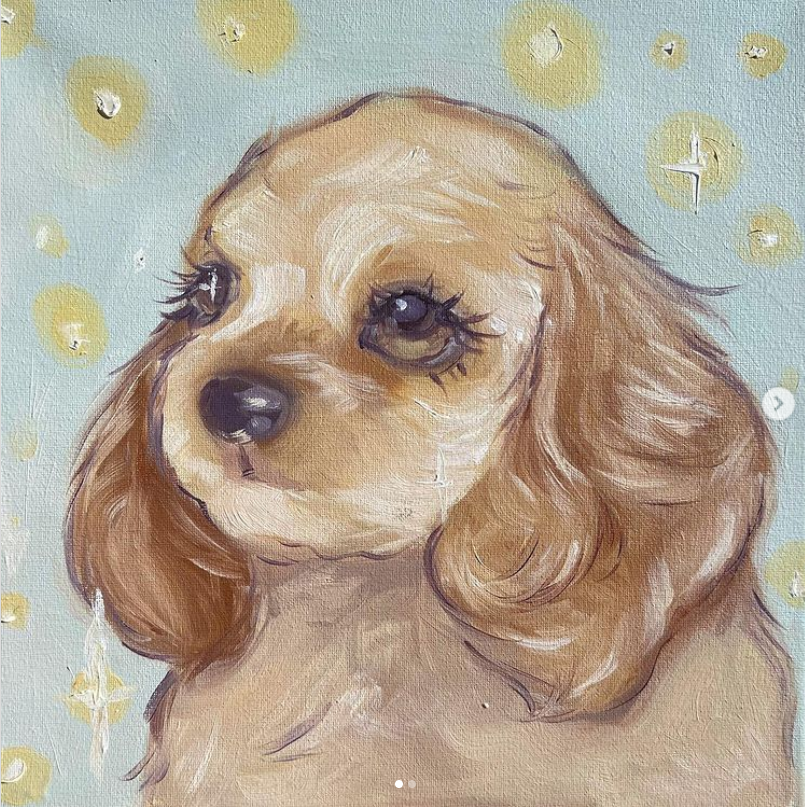

About Me
Hello, my name is Isabel Vieyra and I am from Mexico City. I am currently in my 6th semester of college and have a strong interest in data science and AI focused on data analysis. I have worked on various projects in the past, as mentioned above, but I hope to specialize in this field in the future. My main areas of expertise include database management and data analysis. However, I also have a keen interest in web development, cloud computing, and software engineering. In my free time, I enjoy playing video games, doing handcrafts such as crochet and painting, and taking care of my plants.
My interest in technology began at a young age, when my brother taught me Python. I have been fascinated by computers ever since and have enjoyed learning more about them through my studies. As a person, I would describe myself as creative, kind, and outgoing. I enjoy meeting new people and working collaboratively on projects. I am excited to continue learning and growing both personally and professionally in the future.